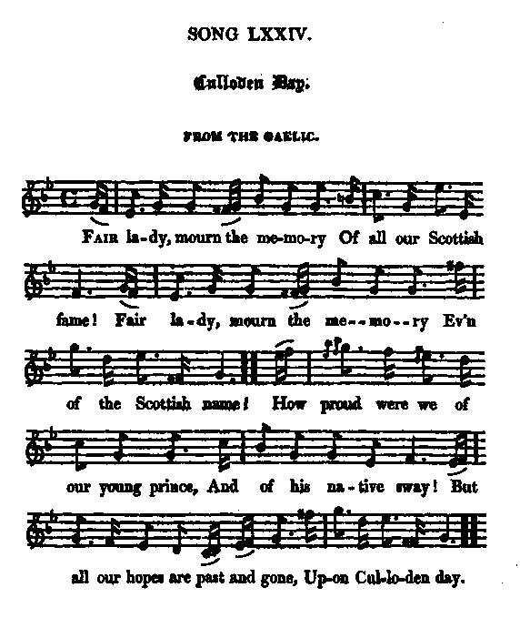

Culloden Day
La journée de Culloden
from James Hogg's "Jacobite Relics"
Tune - Mélodie"An cuala sibh mar thachair dhuinn" (pentatonic)
from Captain Simon Fraser's Highland tunes Collection, 1816
and Hogg's "Jacobite Relics" 2nd Series N°74, page 149, 1821
Sequenced by Christian Souchon
|
To the tune:
"Is the first of a long series of mournful and affecting ditties on that battle, in which all the hopes of the bold assertors of the right of the Stuarts were for ever annihilated. The song is the address of a Highland bard to the lady of his chief; and he comforts her with the horrid proposal of killing her, and hiding her in the grave of her father, rather than suffer her to be taken or disgraced by the enemy, a strong feature of the despair to which the country was reduced. The air bears the same name with the song. Frazer calls it "N' cuala sibh mar thachair dhuinn." [English title: "Culloden Day" n° 143 page 58, though the Gaelic phrase seems to mean "Did you hear you what happened to us?"] Source "The Fiddler's Companion" (cf. Links). |
 |
A propos de la mélodie:
"Ce morceau est le premier d'une longue série de chants funèbres sur la bataille de Culloden où furent ruinés à jamais les espoirs des courageux défenseurs de la dynastie des Stuarts de la rétablir dans ses droits. On y voit un barde des Highlands s'adresser à la femme de son Chef et la réconforter en lui faisant l'horrible proposition de la tuer et l'enfouir dans la tombe de son père, plutôt que d'être prise ou déshonorée par l'ennemi. On ne saurait mieux décrire le désespoir auquel le pays était réduit. La mélodie a le même titre que le chant. Fraser l'appelle "N' cuala sibh mar thachair dhuinn." [Titre anglais: "Culloden Day" n° 143 page 58, mais la phrase gaélique semble signifier "Savez-vous ce qui nous est arrivé?"] Source "The Fiddler's Companion" (cf. Liens). |

|
CULLODEN DAY
FROM THE GAELIC. (*) 1. Fair lady, mourn the memory Of all our Scottish fame! Fair lady, mourn the memory Ev'n of the Scottish name! (twice) How proud were we of our young prince, And of his native sway! But all our hopes are past and gone, Upon Culloden day. (twice) 2. There was no lack of bravery there, No spare of blood or breath, For, one to two, our foes we dar'd, For freedom or for death. The bitterness of grief is past, Of terror and dismay: The die was risk'd, and foully, cast, Upon Culloden day. 3. And must thou seek a foreign clime, In poverty to pine, No friend or clansman by thy side, No vassal that is thine ? Leading thy young son by the hand, And trembling for his life, As at the name of Cumberland He grasps his father's knife. 4. I cannot see thee, lady fair, Turn'd out on the world wide; I cannot see thee, lady fair, Weep on the bleak hill side. Before such noble stem should bend To tyrant's treachery, I'll lay thee with thy gallant sire, Beneath the beechen tree. 5. I'll hide thee in Clan-Ronald's isles, Where honour still bears sway; I'll watch the traitor's hovering sails, By islet and by bay: And ere thy honour shall be stain'd, This sword avenge shall thee, And lay thee with thy gallant kin, Below the beechen tree. 6. What is there now in thee, Scotland, To us can pleasure give ? What is there now in thee, Scotland, For which we ought to live? Since we have stood, and stood in vain, For all that we held dear, Still have we left a sacrifice To offer on our bier. 7. A foreign and fanatic sway Our Southron foes may gall; The cup is fill'd, they yet shall drink, And they deserve it all. But there is nought for us or ours, In which to hope or trust, But hide us in our fathers' graves, Amid our fathers' dust. Source: "The Jacobite Relics of Scotland, being the Songs, Airs and Legends of the Adherents to the House of Stuart" collected by James Hogg, volume 2 published in Edinburgh by William Blackwood in 1821. (*) See Hogg's note to "McLean's Welcome" about the meaning of "From the Gaelic". |
LA JOURNEE DE CULLODEN
TRANSCRIT DU GAELIQUE (*) 1. Madame, aujourd'hui l'Ecosse est en deuil De sa gloire passée. Nous dire Ecossais était notre orgueil: Cette ère est terminée! (bis) Du jeune prince nous étions si fiers! Quelle noble prestance! Culloden, hélas, a mis fin hier Aux folles espérances! (bis) 2. Le courage ne nous fit pas défaut: Que de sang, que de rage! Nous luttâmes un contre deux: plutôt La mort que l'esclavage! Et la terreur qu'ils font régner n'est rien, Auprès de l'amertume D'avoir, par un jet de dés incertain, Irrité la Fortune! 3. Vous faudra-t-il donc, et sous d'autres cieux, Languir dans la misère, Privée du soutien d'amis généreux, D'un clan qui vous vénère? Tenant par la main votre jeune fils, O, votre coeur se serre Quand au nom de Cumberland il saisit La dague de son père. 4. Madame, je ne peux imaginer Que vous courriez le monde Pour enfouir dans quelque lieu désolé Votre peine profonde. Un si noble tronc s'inclinerait sous Les coups que porte un traître? Plutôt vous enfouir avec votre époux Parmi le bois de hêtres! 5. L'honneur règne aux Îles de Clanranald: Vous y serez cachée. Je surveillerai l'approche de voiles Ennemies dans la baie: Dussiez-vous subir affront plus odieux, Après votre vengeance, Mon fer mettrait fin, cruel mais pieux, Las, à votre existence. 6. Ecosse, que reste-t-il donc de toi Qui nos âmes captive? Ecosse, que reste-t-il donc en toi Qui vaille que l'on vive? Nous levâmes-nous en vain à l'appel D'une cause si chère? Au sacrifice il fallait des autels: Ce furent nos bières. 7. Du fanatisme et du joug étranger Ceux des Lowlands s'irritent. La coupe est pleine: il faudra la vider: Châtiment qu'ils méritent! Mais pour nous et les nôtres, il n'est rien Où nos espoirs se fondent, Sinon rejoindre nos glorieux anciens A l'abri de leurs tombes! (Trad. Christian Souchon (c) 2010) (*) Cf. la note de Hogg à la page "McLean's Welcome" pour le sens qu'il donne à l'expression "Transcrit du gaélique". |